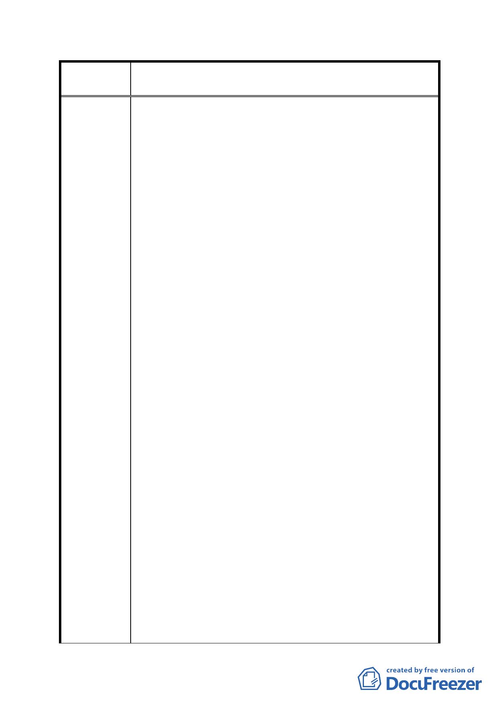

案
名
修訂臺北市「基隆河（中山橋至成美橋段）附近地區土地使
用分區與都市設計管制要點」（北段地區）計畫案
陳情意見如下：
（一）土地及建築物之使用
取消大彎北段商業及娛樂區，原規定「不准許住宅使用」之
限制，卻特別限制Cl及C2土地，總容積樓地板面積二分之一
以上，須作觀光旅館使用，陳情人認為上述建議修正案，不
僅違反都市計畫規劃原則，且嚴重打擊國內觀光產業，理由
如下：
1、大彎北段地區目前在營業中之旅館有維多利亞等七家，
總房間數為472 間，若加上即將開幕及規劃中之旅館，
該地區總房間數高達1400間，幾乎是君悅 (865) 及晶華
(569) 合計之規模。原來該區都市計畫規劃為禁止作住
宅使用，且商業性很強之商業及娛樂區，有如 信義計畫
區，是有其合理性，如今卻變成高密度汽車旅館、賓館、
小型商務旅館及國際觀光旅館林立，混雜於住宅中，根
本違反都市計畫規劃原則。
2、據查目前在營業中之維多利亞等旅館，平均住房率不到
50％，將來該地區總房間數高達1400間客房，再加上餐
飲等附屬設施，卻佇立在住宅區中，沒有商業性活動，
業者根本無法生存，將嚴重打擊國內觀光產業。
3、台北市政府擬放寬大彎北段地區住宅使用限制，卻唯獨
要求陳情人所有C2土地，總容積樓地板面積二分之一以
上，須作觀光旅館使用，根本是強人所難，且不符合公
平原則。
（二）放寬建築物高度限制
陳情人所有大彎北段地區C2土地，依台北市政府於83年6月1
日所發布府都二字第83027894號都市計畫內容中，對於建築
物高度規定「高度以不低於60公尺為原則」，並註明「為塑
造本地區整體特殊建築風格及地區優美天際線，本地區各街
廓之建築物高度應依左表之規定」，其他建築物高度原限制
36公尺，97年1月30日公展時，放寬至50公尺，放寬幅度達
40％。對於台北市政府提出A1、A2、Bl及B2 四街廓，建築
物高度修改為和C2 一樣「高度以不低於60公尺為原則」之
規定，陳情人認為嚴重影響都市設計景觀及違反信賴保護原
則，理由如下：
1、C2 土地建築物高度規定「高度以不低於60公尺為原則」，
- 77 -